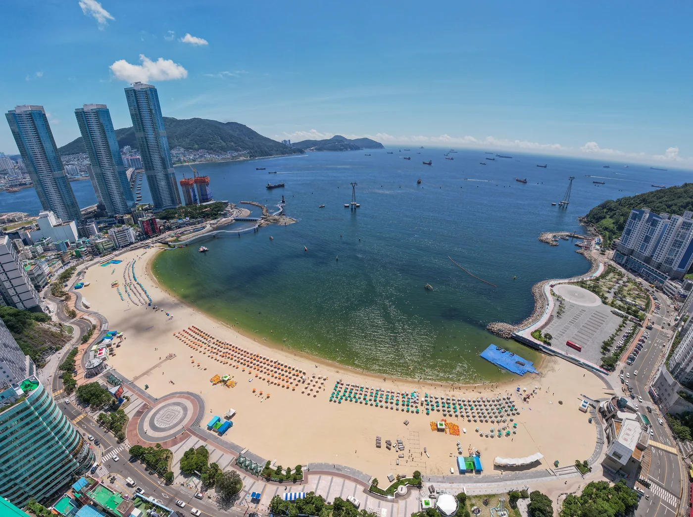

01 · Choryang
02 · Yeongdo
03 · Songdo
Busan · Journey 01
부산을,당신의 속도로.
초량의 골목에서 영도의 바람을 지나 송도의 저녁까지. 좋아하는 속도와 동네의 결을 읽어 2박 3일을 하나의 개인 여행으로 엮습니다.
사진 출처 · 부산관광아카이브 / 서구 문화관광과 · 공공누리 제1유형

Busan · Journey 01
초량의 골목에서 영도의 바람을 지나 송도의 저녁까지. 좋아하는 속도와 동네의 결을 읽어 2박 3일을 하나의 개인 여행으로 엮습니다.
사진 출처 · 부산관광아카이브 / 서구 문화관광과 · 공공누리 제1유형